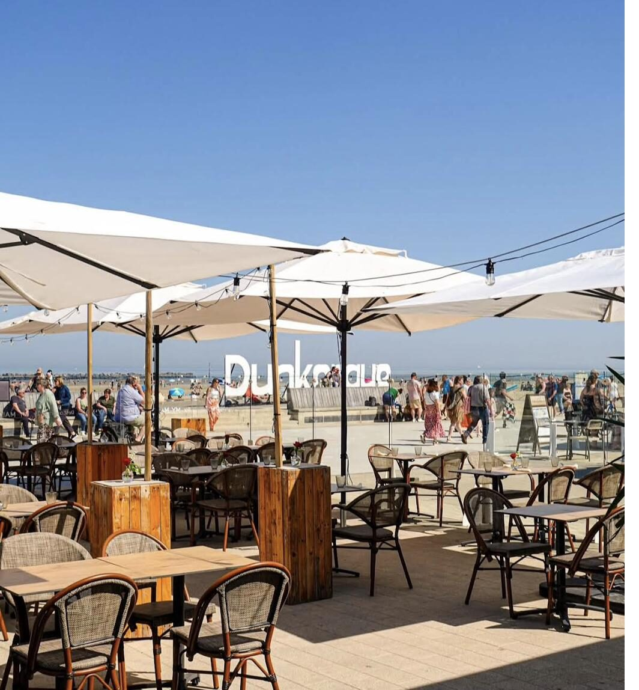
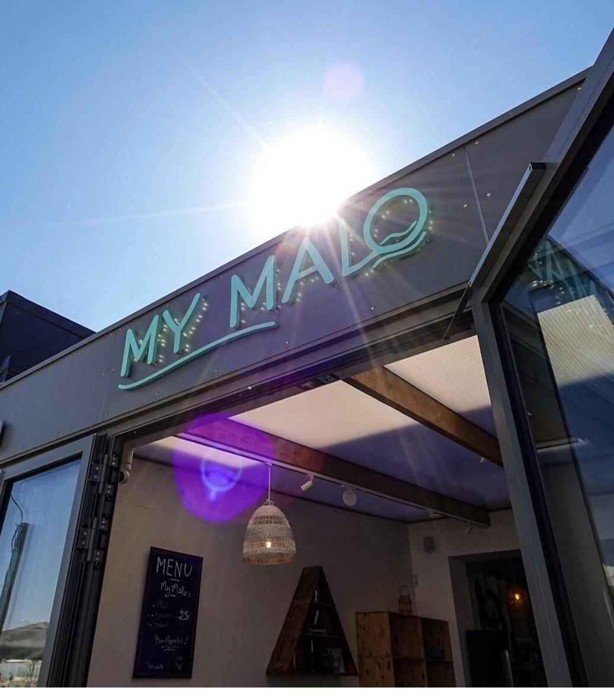
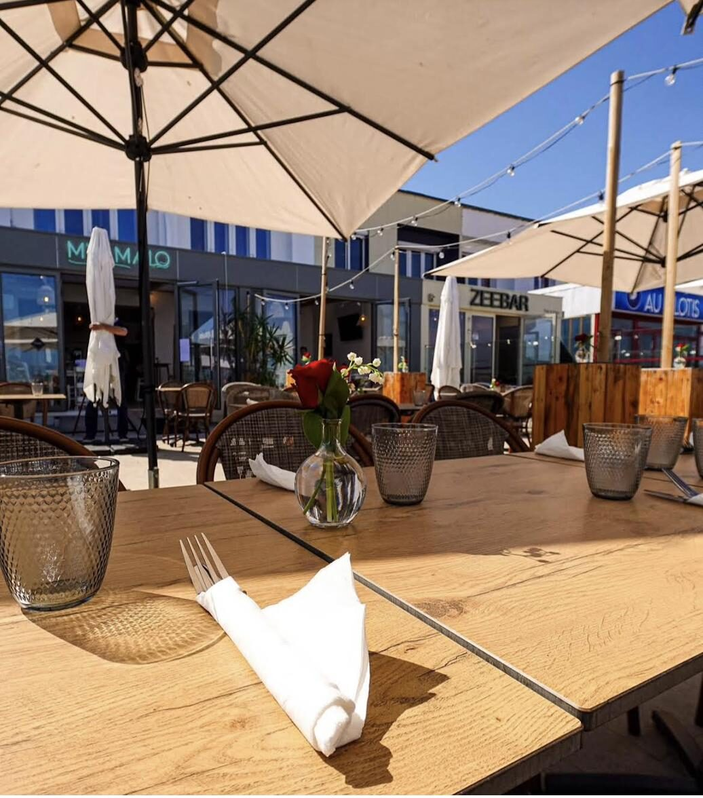
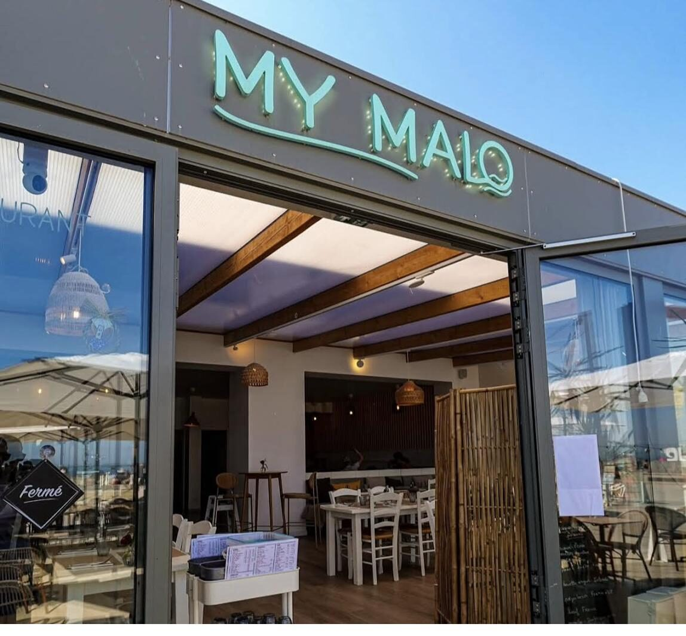
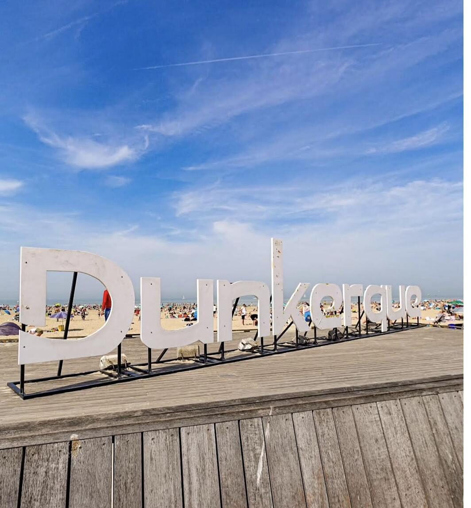
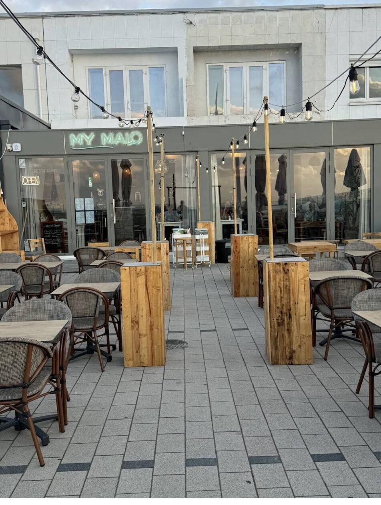
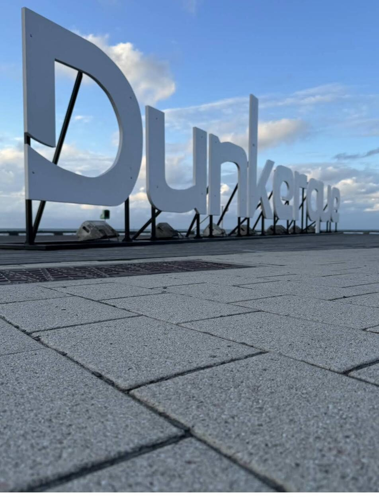

Face à la mer, les pieds dans le Nord
Moules de Dunkerque, plats du Nord faits maison et poke bowls fraîcheur — dans un cadre lounge et bohème, sur la digue, à deux pas de la plage.
La carte
Fromages locaux de la ferme des Moëres (Flamand rouge, craquant, Tomme Flamande à la bière) et charcuterie des salaisons du « Clair bois ».
Saumon fumé, flétan fumé, tartinade de thon maison, gambas sautées. Disponible de mai à septembre.
Duo de saumon cru et saumon fumé.
Croquettes artisanales de la Malle aux Croquettes, fabriquées à Dunkerque, sauce tartare maison.
Bun brioché, salade, tomate, oignons pickles, cheddar ou Maroilles, sauce burger My Malo.
Sauce cocktail My Malo, jaune d'œuf et ses condiments.
Fromage du Nord de la ferme du pont des loups, cuit au four, et sa charcuterie des salaisons du « Clair bois ».
Ragoût de bœuf mijoté à la bière et au pain d'épices.
Viande de poulet, porc et lapin en gelée de bouillon.
Portion supplémentaire +3€.
Mayonnaise, Maroilles, cheddar, échalotes, poivre, curry, chorizo ou tartare.
Moules de Dunkerque (selon arrivage), frites et mayonnaise maison. Au choix : marinières, Maroilles, à l'ail, curry, chorizo ou crème.
Dos de lieu noir servi avec frites et sauce tartare maison.
Poisson du jour et/ou crustacés selon arrivage, sauce échalotes ou chorizo, ratatouille maison.
Duo de saumon cru et saumon fumé.
Croquettes artisanales fabriquées à Dunkerque, sauce tartare maison.
Riz à sushi vinaigré, légumes cuisinés maison et légumes crus : edamame, avocat (selon arrivage), concombres marinés, choux marinés, carottes, chou chinois cuit, graines de sésame et de courge. Sauce au choix : soja salé, sucré ou sriracha.
Boulettes de légumineuse maison.
Croquettes de crevettes grises ×2 et tranche de saumon fumé.
Boulettes de légumineuse maison.
Nappée de caramel maison et boule de glace vanille artisanale.
Mignardises : mousse chocolat, cannelé, muffin caramel et pom-pie.
Vanille délice bourbon Madagascar, fraise, chocolat fleur de cao, café moka Éthiopie, caramel beurre salé de Guérande, pistache de Sicile, spéculoos, sorbets citron et melon.
1 boule vanille, 1 caramel beurre salé, 1 spéculoos, coulis caramel maison, chantilly et brisures de spéculoos.
2 boules sorbet citron, 4cL vodka.
Jusqu'à la Gourmande : banane, caramel maison, glace artisanale vanille et chantilly.
Loburg, Bon Secours Prestige, Gallia West IPA, Cuvée des Trolls, Kasteel Rubus, bière du moment, Picon bière…
Vedett Blanche, Duvel, Chimay Bleue, Paix Dieu, 1664 sans alcool.
Punch maison, mojito, spritz, gin tonic, Pina Colada by My Malo, Crazy Melon by My Malo.
Melon en folie, Rouge tentation, L'exotique, Coco Câline, virgin mojito, virgin gin tonic.
Chardonnay, Côtes du Rhône AOP, Chablis AOP, Pinot noir, ST Nicolas de Bourgueil, Côtes de Provence AOP… Bouteilles de 24€ à 42€.
Imaginarium blanc de blanc brut, Champagne Veuve de Beaumont.
Expresso, café viennois, latte, chocolat chaud, Irish ou Bailey's coffee, thés Darjeeling et infusions. Décaféiné sur demande.
Eaux, sodas, jus Granini, sirops, diabolos.
Origines viandes et poissons : poulet des Hauts-de-France, bavette Angus U.E., bœuf U.E./France, moules de Dunkerque selon arrivage, saumon élevé en Écosse, crevettes grises pêchées en mer du Nord, charcuterie régionale des Hauts-de-France. La liste des allergènes est disponible sur demande. Prix taxes et service compris. L'abus d'alcool est dangereux pour la santé, à consommer avec modération.
On vous attend, selon la saison
| Lundi – Vendredi | 11:30 – 13:30 / 18:30 – 21:30 |
| Samedi – Dimanche | 11:30 – 14:30 / 18:30 – 21:30 |
| Tous les jours | 11:30 – 14:30 / 18:30 – 22:00 |
| Vacances scolaires | 11:30 – 14:30 / 18:30 – 21:30 |
| 24 & 31 décembre | Service du midi uniquement |
| 25 décembre & 1er janvier | Fermé |
Nos horaires sont indicatifs et peuvent évoluer selon la saison et la météo. En cas de doute, appelez-nous au 09 79 74 16 55.
Une salle bohème, deux terrasses face à la mer
À l'intérieur, un cadre lounge et cosy pour les soirées du Nord. Aux beaux jours, deux terrasses sur la digue de Malo-les-Bains — apéro face aux vagues, lettres de Dunkerque en toile de fond, coucher de soleil compris.







Vos avis
« Commande rapide, plats délicieux, belle déco, équipe souriante et prix corrects. Pour moi, un des meilleurs restaurants de Dunkerque ! »
Dimitri — Google
« Endroit chaleureux, plats particulièrement savoureux. Mention spéciale pour le service, très sympathique. Je recommande. »
Rudy — Google
« Serveuse attentionnée et parfaitement anglophone, plats arrivés sans attente, prix très raisonnables pour le front de mer. J'y retournerai. »
Ryan — Google